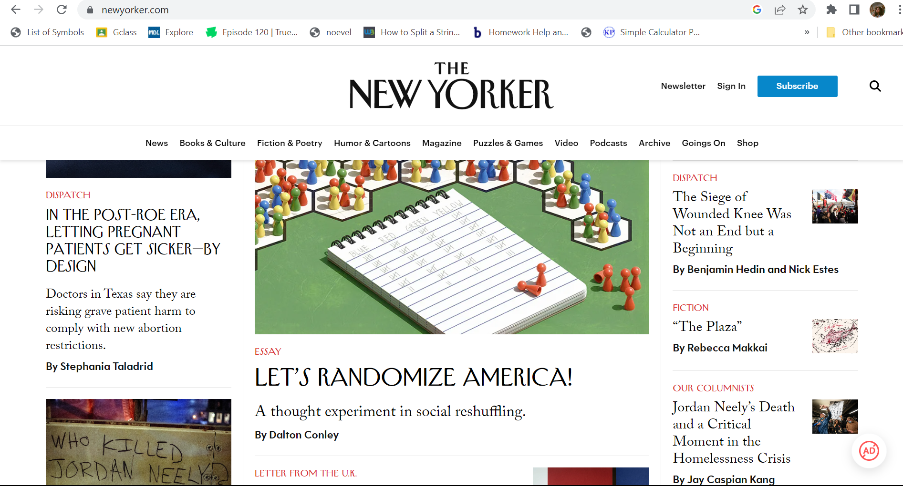

Bootstrap is a free and open-source front-end web development framework that was created by Twitter. It is designed to help developers create responsive, mobile-first websited quickly and easily. Bootstrap includes HTML, CSS, and JavaScript components that can be used to build websites with a consistent look and feel across different devices and screen sizes.
What is Bootstrap?
Importance of Using Bootstrap in Website Projects
Bootstrap is a powerful framework that provides web developers with the necessary tools to create modern and responsive websites. One of the main reasons why it is important to use Bootstrap in website projects is its grid system. The grid system allows for easy layout creation, ensuring that all elements on a page are properly aligned and spaced. This results in a clean and organized design that is visually appealing to users. Another reason why Bootstrap is important in website projects is its extensive library of components. These components provide developers with pre-built UI elements that can be easily customized to fit the specific needs of a website. This saves time and resources, allowing for quick and efficient development. Additionally, the use of these components ensures a consistent design throughout the website, providing users with a seamless experience.
Websites that Utilized Bootstrap in the Past

The New Yorker
One website that utilized Bootstrap in the past was the popular news site, The New Yorker. The site used Bootstrap's grid system to create a clean and organized layout for its articles and featured stories. The use of Bootstrap allowed for a responsive design that adapted well to different screen sizes, ensuring a seamless reading experience for all users.
Another example is the e-commerce site, Jet.com. Jet.com utilized Bootstrap to create a modern and visually appealing design for its online store. The framework's components were used to create a user-friendly interface that allowed customers to easily browse and purchase products. The use of Bootstrap also allowed for quick and efficient development, saving time and resources for the company.
Some Websites That Use Bootstrap Today
Airbnb
Bootstrap has become a staple in modern web design, and many websites today are using it to create beautiful and responsive layouts. One such website is Airbnb, which uses Bootstrap's grid system to ensure that all elements on the page are properly aligned and spaced. The use of Bootstrap also allows for quick and efficient development, ensuring that new features can be added easily.
Spotify
Another website that uses Bootstrap is Spotify, which takes advantage of its extensive library of components. This allows for the creation of custom UI elements that fit the specific needs of the website. The use of these components ensures a consistent design throughout the site, providing users with a seamless experience.